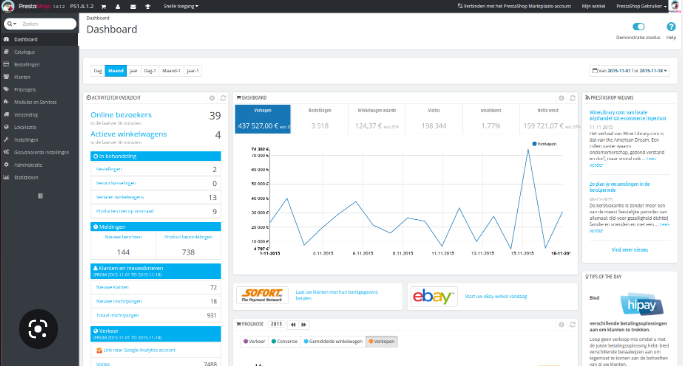
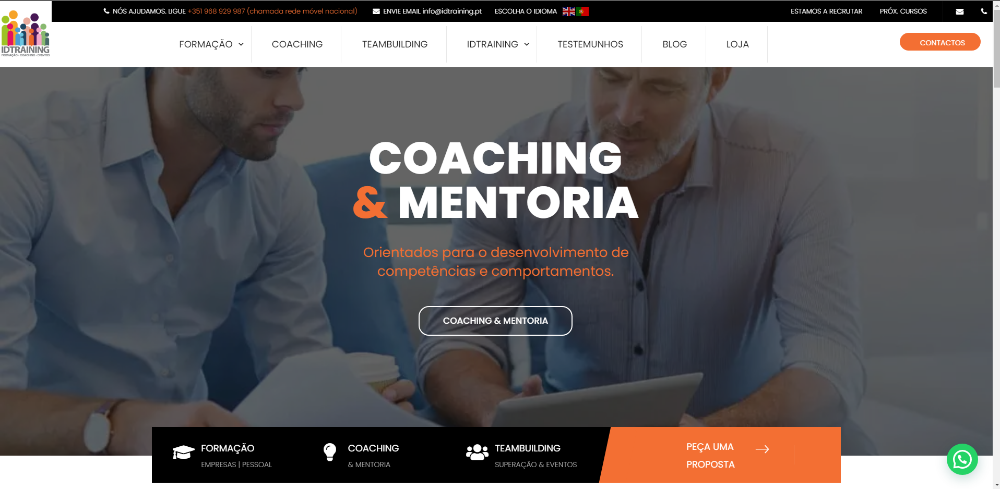
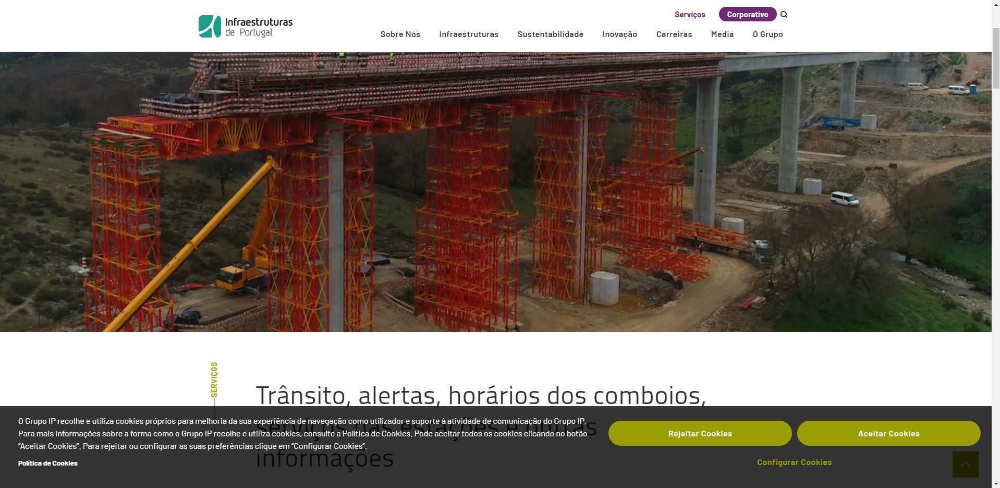
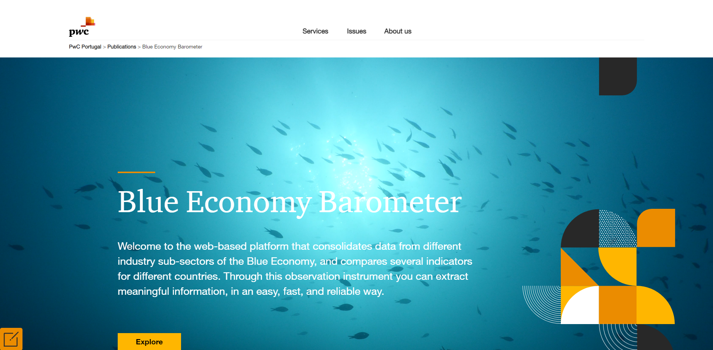
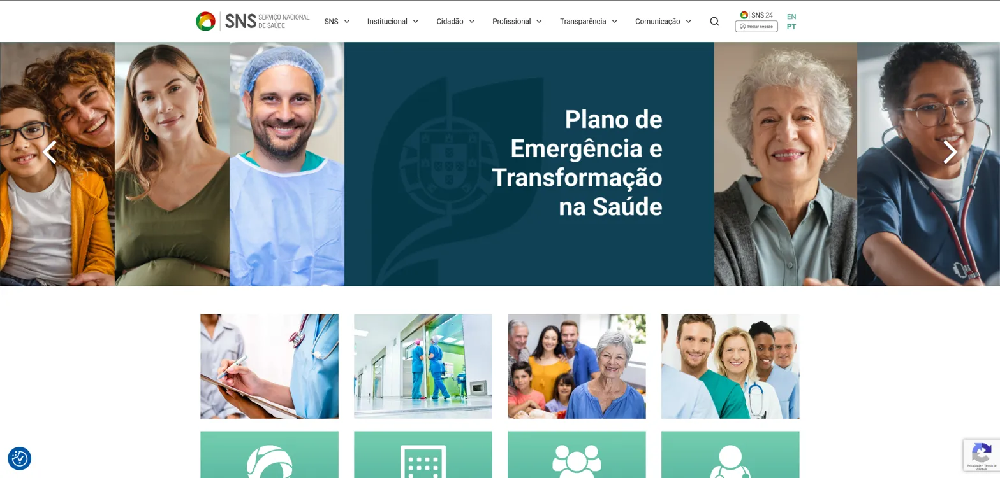
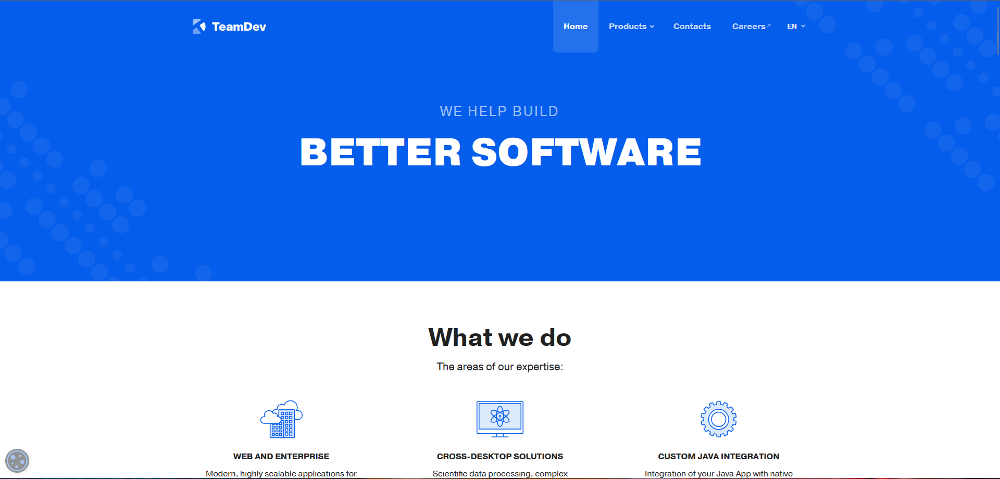

PrestaShop · HTML · CSS
Portal Mestre de Obras
E-commerce portal built on PrestaShop with fully custom HTML and CSS theming.
Open to new opportunities
8+ years building performant, accessible web experiences — from pixel-perfect UI to full CMS architecture.
Hello! I'm Daniel — a Front-End Developer with 8+ years of experience turning complex requirements into clean, fast, and accessible web products. I care deeply about code quality, user experience, and the details that make the difference.
My stack spans HTML, CSS, JavaScript, TypeScript, PHP and a wide range of frameworks — WordPress, Drupal, Angular, React, Hugo, Jekyll, and Blazor. I'm equally comfortable leading a CMS migration, building custom plugins, integrating with Power Platform, or pushing pixels until they're perfect.
I hold a Degree in Computer Science Engineering from Universidade Autónoma de Lisboa and have delivered projects for startups, state-owned institutions like Infraestruturas de Portugal, the Ministry of Health (SPMS), and global consulting firm PwC Portugal. At PwC I was even awarded for an innovative onboarding app I helped build.
I'm currently available for new opportunities — whether that's a full-time role, a long-term contract, or a challenging freelance project.
Download CV
E-commerce portal built on PrestaShop with fully custom HTML and CSS theming.

Theme customization, plugin setup and SEO optimization for the training company's website.
Visit site

Multiple client and internal projects including HTML/CSS/JS integration with Blazor Web Apps and Microsoft Power platform.
Blue Economy Barometer
Built and maintained WordPress sites for Portugal's National Health Service entities. Delivered custom templates, plugin development, WCAG accessibility compliance, security hardening, and hands-on training for SNS staff.
Visit site
Developed and maintained static websites for a software company specialising in cross-desktop and enterprise solutions. Delivered new features, refactored legacy code, and collaborated via Git on responsive, accessible builds.
Visit sitePortal Mestre de Obras
Built an e-commerce portal on PrestaShop with custom HTML/CSS theming, domain setup, payment integration (PayPal), and SEO optimisation.
ID Training
Owned the full WordPress lifecycle — theme customisation, plugin management (LiveChat, Mailchimp, Google Maps), multilingual support (EN/PT), and ongoing SEO improvements.
Infraestruturas de Portugal via Future-Compta
Led the Drupal 8/9 migration of 5 institutional websites (IP, IPE, IPP, IPS, Portugal Tolls). Coordinated with design (Figma) and front-end teams on HTML/CSS/JS, responsive theming and content management.
Delivered multiple client and internal projects — integrating HTML/CSS/JS with Blazor, Power Apps and PowerBI. Co-created an award-winning employee onboarding app built with React and Blazor (C#).
🏆 Internal Innovation AwardSPMS – Ministério da Saúde via Watermellon Tecnologias
Built and maintained WordPress sites for Portugal's National Health Service entities — custom templates, plugin development, WCAG accessibility compliance, security hardening, and hands-on training for SNS staff.
Developed and maintained static websites with Hugo and Jekyll. Delivered new features in HTML/CSS/JS, refactored legacy codebases, and enforced code quality through Git-based reviews and collaborative deployments.
I'm actively looking for my next challenge — a front-end or full-stack role where I can build great products and grow with a strong team. If you think we'd be a good fit, I'd love to hear from you.